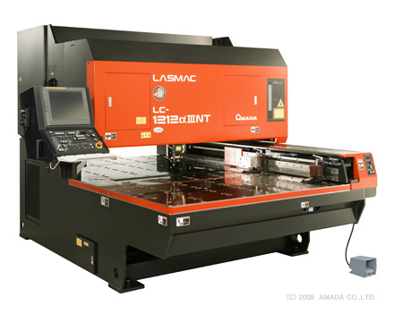
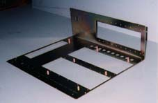
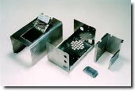
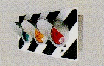

卓上用シャーシ・キャビネット
手で持ち運べるサイズの精密板金製品を中心に、筐体まわりの対応範囲を明確に見せます。
提案用サンプル / Website Renewal Proposal
株式会社 飯島シャーシ / 精密板金加工
卓上用シャーシ・キャビネットを中心に、
通信機、医療機、学校教材などの分野へ。
図面段階の確認から、1個の製作、
小ロットの加工まで、
加工可否と見積依頼までの情報を分かりやすく整理します。
Page Concept
現行サイトに掲載されている強みを、発注担当者が判断しやすい言葉に整理。 設備情報に加えて、急ぎの1点、板厚違い、小ロットといった依頼内容から導線を作ります。
Strengths
既存サイトの内容を、BtoBの発注判断に合わせて短く整理しています。
手で持ち運べるサイズの精密板金製品を中心に、筐体まわりの対応範囲を明確に見せます。
材料自動供給装置などの設備情報を、安定生産や短納期対応の判断材料として掲載します。
板厚違いを含む複合的な加工について、問い合わせ前に確認したい条件を分かりやすく提示します。
「1点だけ」「急ぎで必要」といった発注側の困りごとを入口に、問い合わせしやすくします。
試作、改良、限定生産など、少量案件の依頼条件が伝わる情報設計にします。

Services
精密板金加工を軸に、試作、小ロット、緊急品などの問い合わせ入口を明確にします。 詳細な加工範囲や材質は、実際の営業確認後に差し替えられるようにしています。
Needs
Works
実績写真と名称は提案用の見せ方です。正式公開時は掲載許可・製品名を要確認です。

製品事例枠 01

製品事例枠 02

製品事例枠 03
Equipment & Quality
現行サイトにあるアマダ製設備、レーザー加工機、タレットパンチプレス、各種ベンダーなどの情報は、 詳細ページへ展開できる構成にしています。数値や台数は公開前に最新情報の確認を推奨します。
設備一覧の掲載内容を確認するFlow
図面、数量、希望納期、用途など分かる範囲でお送りください。
加工可否、仕様、材質、仕上げなどを確認します。
内容確定後、費用と納期の目安をご案内します。
加工内容に合わせてレーザー、パンチ、曲げ、溶接などを進行します。
品質確認後、指定場所へ納品します。
Company
既存サイトに掲載されている情報をベースにしています。公開前に最新情報の確認をお願いします。
Contact
「図面を見てほしい」「1点だけ急ぎで作りたい」「小ロットで依頼したい」など、 発注前に確認したい内容を送れる導線にしています。